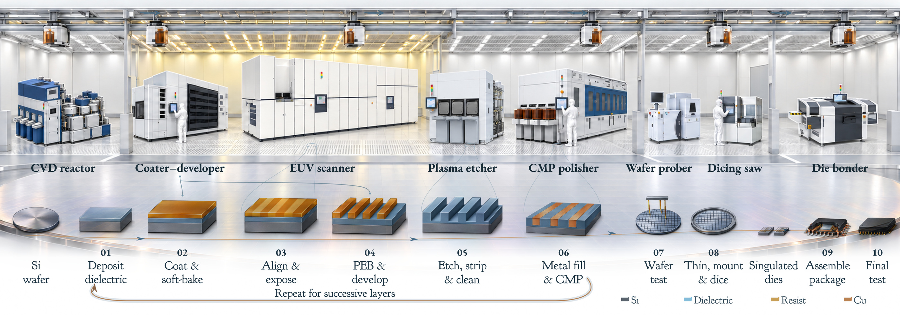
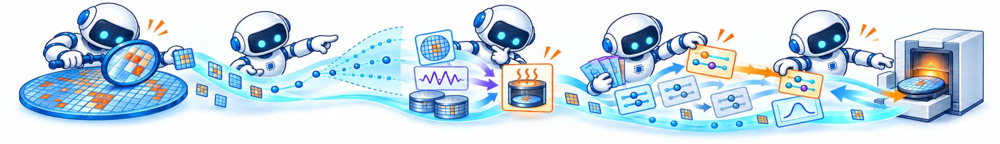
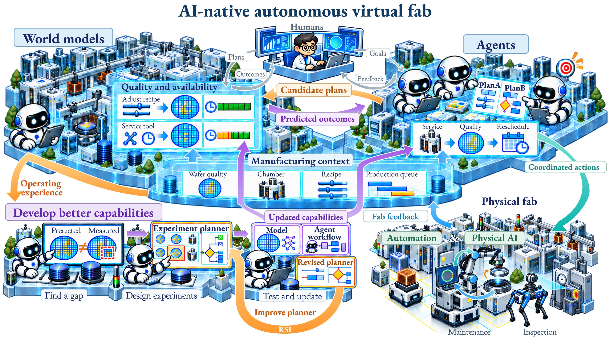

A survey & an open research collection
Awesome AI-Assisted
Semiconductor
Manufacturing.
From Perception
to Autonomy.
How does AI move from recognizing a defect to coordinating a factory? Explore the manufacturing tasks, the methods and the decisions that connect them.
01 / Overview
Many tasks.
One connected factory.
Five manufacturing scopes meet five AI stages. Explore a task, or follow the pipeline from Perception to Autonomy.
From Perception to Autonomy: A Survey on AI-Assisted Semiconductor Manufacturing
* Corresponding authors.
02 / Inside manufacturing
From wafer
to finished chip.
Films are deposited, patterns are transferred, and structures are built layer by layer. Testing and packaging turn a processed wafer into finished chips.

BUILD THE LAYERS
Deposit a thin film
A thin layer of material is added to the wafer. Its thickness and uniformity influence the structures built in later steps.
Fabrication repeats deposition, patterning and material removal to build multiple layers.
03 / Five AI stages
From Perception
to Autonomy.
Recognize what is happening, anticipate outcomes, explain causes, choose actions and learn from their effects.
Follow the progression ↙
L1 / Perception
What is happening?
Recognize patterns, defects and operating states in images or sensor data.
Locate a defect in an inspection image, or recognize a spatial failure pattern on a wafer.
Explore Perception papers ↗04 / The research landscape
Where manufacturing
meets intelligence.
Explore how the literature is distributed across manufacturing scopes, AI stages and years.
Select a circle to read the papers at that intersection.
Circle area = share of scopeSelect a bar to browse the papers from that year.
Each paper is counted once.
Papers may span multiple AI stages. Three research testbeds have no stage assignment.
Download data ↓05 / A shared direction
AI-native
autonomous virtual fab.
Manufacturing outcomes depend on sequences of connected actions. World models and agents can help coordinate these actions and learn from operating experience.

World models
Predict how an action changes wafer quality, equipment state and production flow, so alternatives can be compared before execution.
Agents
Use these predictions to plan and coordinate process changes, maintenance and scheduling, working with engineers across tasks.
Physical AI & feedback
Connect plans to factory execution. Measured outcomes improve world models, agent workflows and the choice of the next experiment.
Keep exploring
Build on the research.
Share what comes next.
The collection grows with the field. Browse the papers here, or suggest additions on GitHub.
From Perception to Autonomy
A Survey on AI-Assisted Semiconductor Manufacturing
View BibTeX +
@unpublished{zhong2026perception,
title = {From Perception to Autonomy: A Survey on {AI}-Assisted Semiconductor Manufacturing},
author = {Zhong, Rui and Huang, Zhikun and Zhang, Xue and Jin, Qian and Li, Yu and Sun, Qi and Gao, Dawei and Song, Yi and Wu, Hanming and Zhuo, Cheng},
year = {2026},
note = {Manuscript}
}